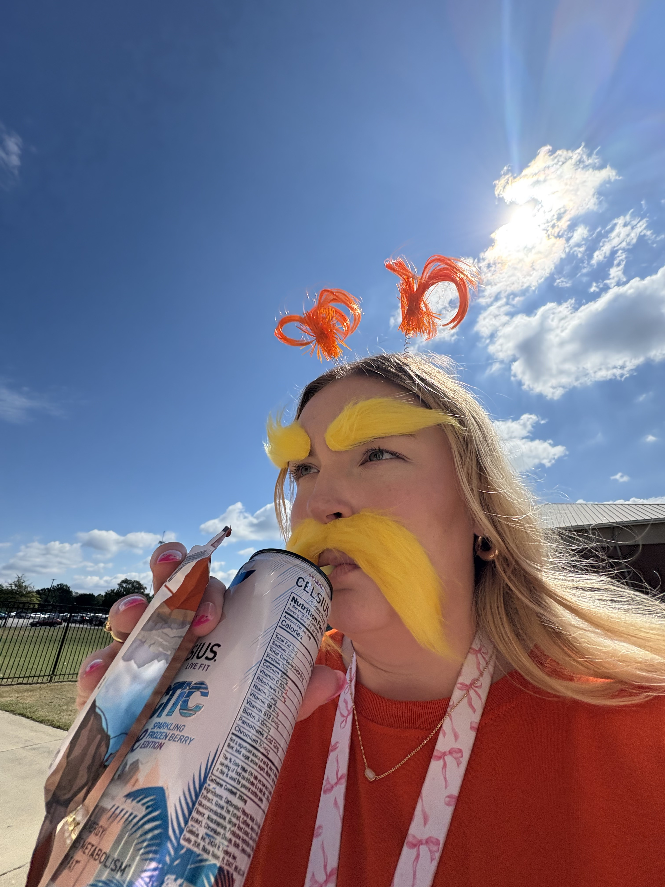

Personality
Pink & Sunshiny
Madi brings a strong personality and bright energy wherever she goes. She values laughter, happy memories, and being completely herself.
The Person Behind the Sunshine
A dedicated teacher with a bright personality, a quick sense of humor, and a deep appreciation for the people and routines that make life joyful.

Her Story
Madi is a teacher, wife, cat mom, and Disney lover whose personality is as bright as the things she enjoys most. She describes herself as blonde, pink, and sunshiny, with a strong personality and a love for the people, places, and routines that make life feel joyful. Some of the things that make her happiest are school breaks, Disney, coffee, her cats, and spending time with her husband.
As an educator, Madi is dedicated, hardworking, and committed to growth. One of her proudest accomplishments is completing her master's degree, her Ed.S. test, and her National Boards work within two years. This achievement shows her determination and passion for teaching, as well as her willingness to keep challenging herself professionally.
Outside of teaching, Madi enjoys the comfort of familiar routines and happy places. Coffee and espresso are part of her everyday rhythm because she connects the taste with productivity and motivation. Her favorite drinks include a Blondie or Smooth 7 with oat milk from 7 Brew, and a quad espresso with oat milk and syrup from Starbucks. She also loves Disney, especially Magic Kingdom, Rapunzel, theme-park snacks, rides, and the funny memories made with people she cares about.
Madi's love for cats also reflects her personality. She appreciates that cats are affectionate on their own terms, independent, and comforting without being overbearing. Looking ahead, one of her dreams is to retire from teaching and live near the beach, surrounded by warmth, peace, animals, and a life that feels relaxed, joyful, and fully her own.
Personality
Madi brings a strong personality and bright energy wherever she goes. She values laughter, happy memories, and being completely herself.
Education
Her master's degree, Ed.S. test, and National Boards work reflect the drive and commitment she brings to her career as an educator.
Something You May Not Know
“Madi talks a lot, but she also listens closely and absorbs information that may help her later.”
Her outgoing personality is matched by a thoughtful side. She pays attention, remembers details, and carries useful lessons forward.

Get to Know Her
From Disney adventures and favorite coffee drinks to life with her cats, Madi's hobbies reveal even more of her personality.
Explore Her Hobbies